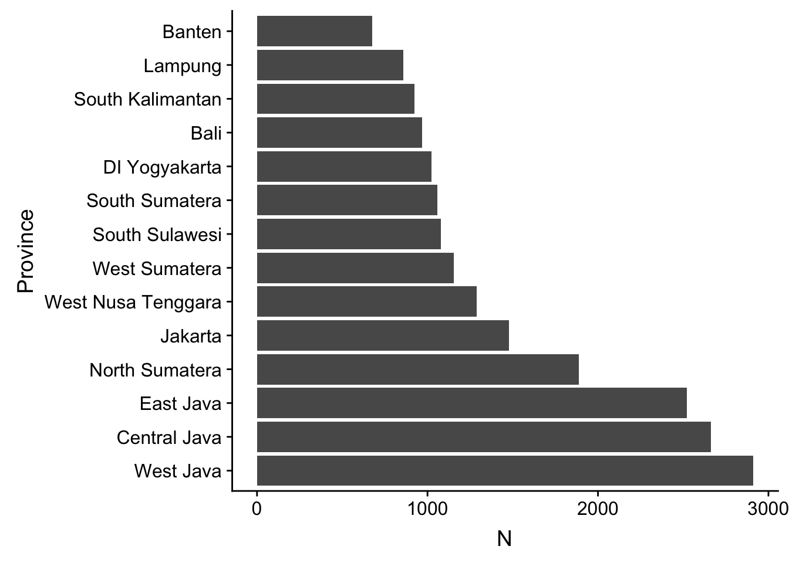

Birth Order Effects
Preparation
Helper
source("0_helpers.R")##
## Attaching package: 'formr'## The following object is masked from 'package:rmarkdown':
##
## word_document##
## Attaching package: 'lubridate'## The following object is masked from 'package:base':
##
## date## Loading required package: carData## lattice theme set by effectsTheme()
## See ?effectsTheme for details.##
## Attaching package: 'data.table'## The following objects are masked from 'package:lubridate':
##
## hour, isoweek, mday, minute, month, quarter, second, wday, week, yday, year## The following objects are masked from 'package:formr':
##
## first, last## Loading required package: Matrix##
## Attaching package: 'lmerTest'## The following object is masked from 'package:lme4':
##
## lmer## The following object is masked from 'package:stats':
##
## step##
## Attaching package: 'cowplot'## The following object is masked from 'package:ggplot2':
##
## ggsave##
## Attaching package: 'psych'## The following objects are masked from 'package:ggplot2':
##
## %+%, alpha## This is lavaan 0.6-3## lavaan is BETA software! Please report any bugs.##
## Attaching package: 'lavaan'## The following object is masked from 'package:psych':
##
## cor2cov## Loading required package: lattice## Loading required package: survival## Loading required package: Formula##
## Attaching package: 'Hmisc'## The following object is masked from 'package:psych':
##
## describe## The following objects are masked from 'package:base':
##
## format.pval, units##
## Attaching package: 'tidyr'## The following object is masked from 'package:Matrix':
##
## expand##
## Attaching package: 'dplyr'## The following objects are masked from 'package:Hmisc':
##
## src, summarize## The following objects are masked from 'package:data.table':
##
## between, first, last## The following objects are masked from 'package:lubridate':
##
## intersect, setdiff, union## The following objects are masked from 'package:formr':
##
## first, last## The following objects are masked from 'package:stats':
##
## filter, lag## The following objects are masked from 'package:base':
##
## intersect, setdiff, setequal, union##
## Attaching package: 'sjPlot'## The following objects are masked from 'package:cowplot':
##
## plot_grid, save_plotopts_chunk$set(warning = FALSE)Load data
birthorder = readRDS("data/alldata_birthorder.rds")Data preparations
# For analyses we want to clean the dataset and get rid of all uninteresting data
birthorder = birthorder %>%
filter(!is.na(pidlink)) %>% # no individuals who are only known from the pregnancy file
filter(is.na(lifebirths) | lifebirths == 2) %>% # remove 7 and 2 individuals who are known as stillbirth or miscarriage but still have PID
select(-lifebirths) %>%
filter(!is.na(mother_pidlink)) %>%
select(-father_pidlink) %>%
filter(is.na(any_multiple_birth) | any_multiple_birth != 1) %>% # remove families with twins/triplets/..
filter(!is.na(birthorder_naive)) %>%
select(-starts_with("age_"), -wave, -any_multiple_birth, -multiple_birth) %>%
mutate(money_spent_smoking_log = if_else(is.na(money_spent_smoking_log) & ever_smoked == 0, 0, money_spent_smoking_log),
amount = if_else(is.na(amount) & ever_smoked == 0, 0, amount),
amount_still_smokers = if_else(is.na(amount_still_smokers) & still_smoking == 0, 0, amount_still_smokers),
birthyear = lubridate::year(birthdate))
# recode Factor Variable as Dummy Variable
birthorder = left_join(birthorder,
birthorder %>%
filter(!is.na(Category)) %>%
mutate(var = 1) %>%
select(pidlink, Category, var) %>%
spread(Category, var, fill = 0, sep = "_"), by = "pidlink") %>%
select(-Category)
# recode Factor Variable as Dummy Variable
birthorder = left_join(birthorder,
birthorder %>%
filter(!is.na(Sector)) %>%
mutate(var = 1) %>%
select(pidlink, Sector, var) %>%
spread(Sector, var, fill = 0, sep = "_"), by = "pidlink") %>%
select(-Sector)
### Variables
birthorder = birthorder %>%
mutate(
# center variables that are used for analysis
g_factor_2015_old = scale(g_factor_2015_old),
g_factor_2015_young = scale(g_factor_2015_young),
g_factor_2007_old = scale(g_factor_2007_old),
g_factor_2007_young = scale(g_factor_2007_young),
raven_2015_old = scale(raven_2015_old),
math_2015_old = scale(math_2015_old),
count_backwards = scale(count_backwards),
raven_2015_young = scale(raven_2015_young),
math_2015_young = scale(math_2015_young),
words_remembered_avg = scale(words_remembered_avg),
words_immediate = scale(words_immediate),
words_delayed = scale(words_delayed),
adaptive_numbering = scale(adaptive_numbering),
raven_2007_old = scale(raven_2007_old),
math_2007_old = scale(math_2007_old),
raven_2007_young = scale(raven_2007_young),
math_2007_young = scale(math_2007_young),
riskA = scale(riskA),
riskB = scale(riskB),
years_of_education_z = scale(years_of_education),
Total_score_highest_z = scale(Total_score_highest),
wage_last_month_z = scale(wage_last_month_log),
wage_last_year_z = scale(wage_last_year_log),
big5_ext = scale(big5_ext),
big5_con = scale(big5_con),
big5_agree = scale(big5_agree),
big5_open = scale(big5_open),
big5_neu = scale(big5_neu),
attended_school = as.integer(attended_school),
attended_school = ifelse(attended_school == 1, 0,
ifelse(attended_school == 2, 1, NA)))
qplot(birthorder$male)## `stat_bin()` using `bins = 30`. Pick better value with `binwidth`.
qplot(birthorder$g_factor_2015_old)## `stat_bin()` using `bins = 30`. Pick better value with `binwidth`.
qplot(birthorder$g_factor_2015_old)## `stat_bin()` using `bins = 30`. Pick better value with `binwidth`.
### Birthorder and Sibling Count
birthorder = birthorder %>%
mutate(
# birthorder as factors with levels of 1, 2, 3, 4, 5, 5+
birthorder_naive_factor = as.character(birthorder_naive),
birthorder_naive_factor = ifelse(birthorder_naive > 5, "5+",
birthorder_naive_factor),
birthorder_naive_factor = factor(birthorder_naive_factor,
levels = c("1","2","3","4","5","5+")),
sibling_count_naive_factor = as.character(sibling_count_naive),
sibling_count_naive_factor = ifelse(sibling_count_naive > 5, "5+",
sibling_count_naive_factor),
sibling_count_naive_factor = factor(sibling_count_naive_factor,
levels = c("2","3","4","5","5+")),
birthorder_uterus_alive_factor = as.character(birthorder_uterus_alive),
birthorder_uterus_alive_factor = ifelse(birthorder_uterus_alive > 5, "5+",
birthorder_uterus_alive_factor),
birthorder_uterus_alive_factor = factor(birthorder_uterus_alive_factor,
levels = c("1","2","3","4","5","5+")),
sibling_count_uterus_alive_factor = as.character(sibling_count_uterus_alive),
sibling_count_uterus_alive_factor = ifelse(sibling_count_uterus_alive > 5, "5+",
sibling_count_uterus_alive_factor),
sibling_count_uterus_alive_factor = factor(sibling_count_uterus_alive_factor,
levels = c("2","3","4","5","5+")),
birthorder_uterus_preg_factor = as.character(birthorder_uterus_preg),
birthorder_uterus_preg_factor = ifelse(birthorder_uterus_preg > 5, "5+",
birthorder_uterus_preg_factor),
birthorder_uterus_preg_factor = factor(birthorder_uterus_preg_factor,
levels = c("1","2","3","4","5","5+")),
sibling_count_uterus_preg_factor = as.character(sibling_count_uterus_preg),
sibling_count_uterus_preg_factor = ifelse(sibling_count_uterus_preg > 5, "5+",
sibling_count_uterus_preg_factor),
sibling_count_uterus_preg_factor = factor(sibling_count_uterus_preg_factor,
levels = c("2","3","4","5","5+")),
birthorder_genes_factor = as.character(birthorder_genes),
birthorder_genes_factor = ifelse(birthorder_genes >5 , "5+", birthorder_genes_factor),
birthorder_genes_factor = factor(birthorder_genes_factor,
levels = c("1","2","3","4","5","5+")),
sibling_count_genes_factor = as.character(sibling_count_genes),
sibling_count_genes_factor = ifelse(sibling_count_genes >5 , "5+",
sibling_count_genes_factor),
sibling_count_genes_factor = factor(sibling_count_genes_factor,
levels = c("2","3","4","5","5+")),
# interaction birthorder * siblingcout for each birthorder
count_birthorder_naive =
factor(str_replace(as.character(interaction(birthorder_naive_factor, sibling_count_naive_factor)),
"\\.", "/"),
levels = c("1/2","2/2", "1/3", "2/3",
"3/3", "1/4", "2/4", "3/4", "4/4",
"1/5", "2/5", "3/5", "4/5", "5/5",
"1/5+", "2/5+", "3/5+", "4/5+",
"5/5+", "5+/5+")),
count_birthorder_uterus_alive =
factor(str_replace(as.character(interaction(birthorder_uterus_alive_factor, sibling_count_uterus_alive_factor)),
"\\.", "/"),
levels = c("1/2","2/2", "1/3", "2/3",
"3/3", "1/4", "2/4", "3/4", "4/4",
"1/5", "2/5", "3/5", "4/5", "5/5",
"1/5+", "2/5+", "3/5+", "4/5+",
"5/5+", "5+/5+")),
count_birthorder_uterus_preg =
factor(str_replace(as.character(interaction(birthorder_uterus_preg_factor, sibling_count_uterus_preg_factor)),
"\\.", "/"),
levels = c("1/2","2/2", "1/3", "2/3",
"3/3", "1/4", "2/4", "3/4", "4/4",
"1/5", "2/5", "3/5", "4/5", "5/5",
"1/5+", "2/5+", "3/5+", "4/5+",
"5/5+", "5+/5+")),
count_birthorder_genes =
factor(str_replace(as.character(interaction(birthorder_genes_factor, sibling_count_genes_factor)), "\\.", "/"),
levels = c("1/2","2/2", "1/3", "2/3",
"3/3", "1/4", "2/4", "3/4", "4/4",
"1/5", "2/5", "3/5", "4/5", "5/5",
"1/5+", "2/5+", "3/5+", "4/5+",
"5/5+", "5+/5+")))
birthorder <- birthorder %>%
mutate(sibling_count = sibling_count_genes_factor,
birth_order_nonlinear = birthorder_genes_factor,
birth_order = birthorder_genes,
age = scale(age/10, scale = FALSE),
count_birth_order = count_birthorder_genes)By province
birthorder <- birthorder %>% filter(!is.na(province))
birthorder$urban = factor(birthorder$sc05==1)
birthorder <- birthorder %>% drop_na(birth_order, mother_pidlink, age, male, urban) %>% group_by(province) %>% filter(n_nonmissing(years_of_education) > 50)
provinces <- birthorder %>% drop_na(birth_order, urban) %>% select(province, urban, years_of_education, birth_order) %>% group_by(province) %>%
summarise(urban = mean(urban == TRUE), n_nonmissing(years_of_education), sd(birth_order, na.rm = TRUE)) %>% arrange(desc(urban))
kable(provinces)##
##
## province urban n_nonmissing(years_of_education) sd(birth_order, na.rm = TRUE)
## ------------------- ------- --------------------------------- ------------------------------
## Jakarta 1.0000 539 1.691
## Banten 0.8065 146 2.172
## DI Yogyakarta 0.7920 411 1.137
## West Java 0.7719 891 1.647
## West Sumatera 0.6736 379 1.784
## Bali 0.6736 281 1.409
## East Java 0.6085 857 1.415
## South Sulawesi 0.5445 316 1.726
## North Sumatera 0.5159 563 1.963
## West Nusa Tenggara 0.4930 260 1.550
## Central Java 0.4797 974 1.359
## South Kalimantan 0.4638 225 1.432
## South Sumatera 0.3567 255 1.763
## Lampung 0.2980 224 1.705add_slope_by_province <- function(model) {
m1 <- update(model, formula = . ~ . + (1 | province), REML = FALSE)
m2 <- update(model, formula = . ~ . + (1 + birth_order || province), REML = FALSE)
an <- anova(m1, m2)
if (an$`Pr(>Chisq)`[2] < .01) {
ranefs <- ranef(m2)$province %>% as.data.frame() %>%
tibble::rownames_to_column("province") %>%
left_join(provinces, by = "province") %>%
arrange(birth_order) %>%
mutate(birth_order = birth_order + fixef(m2)["birth_order"],
province = forcats::fct_inorder(province)
)
print(knitr::kable(ranefs %>% select(province, birth_order) %>% arrange(birth_order)))
print(ranefs %>%
ggplot(aes(province, birth_order, colour = urban)) +
geom_point(size = 4) +
scale_colour_continuous(low = "red", high = "blue") +
coord_flip() +
geom_hline(yintercept = fixef(m2)["birth_order"], linetype = 'dashed'))
cat("\n\n\n")
}
an
}Wherever adding a random slope for the linear birth order by province improved the model at a nominal significance of p < .05, we show how effects varied by province in a plot.
Number of people by province
qplot(forcats::fct_infreq(birthorder$province)) + coord_flip() + xlab("Province") + ylab("N")
Family size by province
ggplot(data = birthorder, aes(forcats::fct_infreq(province), sibling_count_genes)) + coord_flip() + xlab("Province") + ylab("N") + geom_pointrange(stat = 'summary')## No summary function supplied, defaulting to `mean_se()qplot(sibling_count_genes, data = birthorder %>% group_by(province) %>% mutate(mean_sibling_count_genes= mean(sibling_count_genes, na.rm =T))) + geom_vline(aes(xintercept = mean_sibling_count_genes), color = 'red') + facet_wrap(~ forcats::fct_infreq(province), scales = "free_y") + coord_cartesian(xlim = c(0,10))## `stat_bin()` using `bins = 30`. Pick better value with `binwidth`.Urbanisation by province
ggplot(data = birthorder, aes(forcats::fct_infreq(province), if_else(urban == "TRUE", 1, 0))) + coord_flip() + xlab("Province") + ylab("N") + geom_pointrange(stat = 'summary')## No summary function supplied, defaulting to `mean_se()Urbanisation and family size
ggplot(data = birthorder %>% group_by(province) %>% summarise(family_size = mean(sibling_count_genes, na.rm = TRUE), urban = mean(if_else(urban == "TRUE", 1,0), na.rm = T)), aes(family_size, urban, label = province)) + geom_text() + xlab("Family size") + ylab("Urbanisation")Intelligence
g-factor 2015 old
birthorder <- birthorder %>% mutate(outcome = g_factor_2015_old)
model = lmer(outcome ~ birth_order + poly(age, 3, raw = TRUE) + male + sibling_count +
(1 | mother_pidlink),
data = birthorder)
add_slope_by_province(model)## singular fit| Df | AIC | BIC | logLik | deviance | Chisq | Chi Df | Pr(>Chisq) |
|---|---|---|---|---|---|---|---|
| 13 | 13990 | 14076 | -6982 | 13964 | NA | NA | NA |
| 14 | 13992 | 14085 | -6982 | 13964 | 0.00000000002728 | 1 | 1 |
g-factor 2015 young
birthorder <- birthorder %>% mutate(outcome = g_factor_2015_young)
model = lmer(outcome ~ birth_order + poly(age, 3, raw = TRUE) + male + sibling_count +
(1 | mother_pidlink),
data = birthorder)
add_slope_by_province(model)| Df | AIC | BIC | logLik | deviance | Chisq | Chi Df | Pr(>Chisq) |
|---|---|---|---|---|---|---|---|
| 13 | 21192 | 21283 | -10583 | 21166 | NA | NA | NA |
| 14 | 21193 | 21291 | -10583 | 21165 | 0.3148 | 1 | 0.5747 |
g-factor 2007 old
birthorder <- birthorder %>% mutate(outcome = g_factor_2007_old)
model = lmer(outcome ~ birth_order + poly(age, 3, raw = TRUE) + male + sibling_count + (1 | mother_pidlink),
data = birthorder)
add_slope_by_province(model)## singular fit| Df | AIC | BIC | logLik | deviance | Chisq | Chi Df | Pr(>Chisq) |
|---|---|---|---|---|---|---|---|
| 13 | 9060 | 9140 | -4517 | 9034 | NA | NA | NA |
| 14 | 9062 | 9148 | -4517 | 9034 | 0 | 1 | 1 |
g-factor 2007 young
birthorder <- birthorder %>% mutate(outcome = g_factor_2007_young)
model = lmer(outcome ~ birth_order + poly(age, 3, raw = TRUE) + male + sibling_count + (1 | mother_pidlink),
data = birthorder)
add_slope_by_province(model)## singular fit| Df | AIC | BIC | logLik | deviance | Chisq | Chi Df | Pr(>Chisq) |
|---|---|---|---|---|---|---|---|
| 13 | 13116 | 13201 | -6545 | 13090 | NA | NA | NA |
| 14 | 13118 | 13210 | -6545 | 13090 | 0.0000000001783 | 1 | 1 |
Raven 2015 old
birthorder <- birthorder %>% mutate(outcome = raven_2015_old)
model = lmer(outcome ~ birth_order + poly(age, 3, raw = TRUE) + male + sibling_count + (1 | mother_pidlink),
data = birthorder)
add_slope_by_province(model)## singular fit| Df | AIC | BIC | logLik | deviance | Chisq | Chi Df | Pr(>Chisq) |
|---|---|---|---|---|---|---|---|
| 13 | 14163 | 14250 | -7069 | 14137 | NA | NA | NA |
| 14 | 14165 | 14259 | -7069 | 14137 | 0.00000000004729 | 1 | 1 |
Numeracy 2015 old
birthorder <- birthorder %>% mutate(outcome = math_2015_old)
model = lmer(outcome ~ birth_order + poly(age, 3, raw = TRUE) + male + sibling_count + (1 | mother_pidlink),
data = birthorder)
add_slope_by_province(model)## singular fit| Df | AIC | BIC | logLik | deviance | Chisq | Chi Df | Pr(>Chisq) |
|---|---|---|---|---|---|---|---|
| 13 | 16411 | 16497 | -8192 | 16385 | NA | NA | NA |
| 14 | 16413 | 16506 | -8192 | 16385 | 0 | 1 | 1 |
Raven 2015 young
birthorder <- birthorder %>% mutate(outcome = raven_2015_young)
model = lmer(outcome ~ birth_order + poly(age, 3, raw = TRUE) + male + sibling_count + (1 | mother_pidlink),
data = birthorder)
add_slope_by_province(model)## singular fit| Df | AIC | BIC | logLik | deviance | Chisq | Chi Df | Pr(>Chisq) |
|---|---|---|---|---|---|---|---|
| 13 | 21127 | 21218 | -10551 | 21101 | NA | NA | NA |
| 14 | 21129 | 21227 | -10551 | 21101 | 0 | 1 | 1 |
Numeracy 2015 young
birthorder <- birthorder %>% mutate(outcome = math_2015_young)
model = lmer(outcome ~ birth_order + poly(age, 3, raw = TRUE) + male + sibling_count + (1 | mother_pidlink),
data = birthorder)
add_slope_by_province(model)| Df | AIC | BIC | logLik | deviance | Chisq | Chi Df | Pr(>Chisq) |
|---|---|---|---|---|---|---|---|
| 13 | 22162 | 22253 | -11068 | 22136 | NA | NA | NA |
| 14 | 22164 | 22262 | -11068 | 22136 | 0.001382 | 1 | 0.9703 |
Raven 2007 old
birthorder <- birthorder %>% mutate(outcome = raven_2007_old)
model = lmer(outcome ~ birth_order + poly(age, 3, raw = TRUE) + male + sibling_count + (1 | mother_pidlink),
data = birthorder)
add_slope_by_province(model)| Df | AIC | BIC | logLik | deviance | Chisq | Chi Df | Pr(>Chisq) |
|---|---|---|---|---|---|---|---|
| 13 | 8768 | 8848 | -4371 | 8742 | NA | NA | NA |
| 14 | 8768 | 8854 | -4370 | 8740 | 2.546 | 1 | 0.1105 |
Numeracy 2007 old
birthorder <- birthorder %>% mutate(outcome = math_2007_old)
model = lmer(outcome ~ birth_order + poly(age, 3, raw = TRUE) + male + sibling_count + (1 | mother_pidlink),
data = birthorder)
add_slope_by_province(model)## singular fit| Df | AIC | BIC | logLik | deviance | Chisq | Chi Df | Pr(>Chisq) |
|---|---|---|---|---|---|---|---|
| 13 | 9634 | 9714 | -4804 | 9608 | NA | NA | NA |
| 14 | 9636 | 9722 | -4804 | 9608 | 0 | 1 | 1 |
Raven 2007 young
birthorder <- birthorder %>% mutate(outcome = raven_2007_young)
model = lmer(outcome ~ birth_order + poly(age, 3, raw = TRUE) + male + sibling_count + (1 | mother_pidlink),
data = birthorder)
add_slope_by_province(model)| Df | AIC | BIC | logLik | deviance | Chisq | Chi Df | Pr(>Chisq) |
|---|---|---|---|---|---|---|---|
| 13 | 13204 | 13289 | -6589 | 13178 | NA | NA | NA |
| 14 | 13204 | 13296 | -6588 | 13176 | 1.2 | 1 | 0.2733 |
Numeracy 2007 young
birthorder <- birthorder %>% mutate(outcome = math_2007_young)
model = lmer(outcome ~ birth_order + poly(age, 3, raw = TRUE) + male + sibling_count + (1 | mother_pidlink),
data = birthorder)
add_slope_by_province(model)## singular fit| Df | AIC | BIC | logLik | deviance | Chisq | Chi Df | Pr(>Chisq) |
|---|---|---|---|---|---|---|---|
| 13 | 13628 | 13713 | -6801 | 13602 | NA | NA | NA |
| 14 | 13630 | 13722 | -6801 | 13602 | 0 | 1 | 1 |
Counting backwards
birthorder <- birthorder %>% mutate(outcome = count_backwards)
model = lmer(outcome ~ birth_order + poly(age, 3, raw = TRUE) + male + sibling_count + (1 | mother_pidlink),
data = birthorder)
add_slope_by_province(model)## singular fit| Df | AIC | BIC | logLik | deviance | Chisq | Chi Df | Pr(>Chisq) |
|---|---|---|---|---|---|---|---|
| 13 | 14946 | 15033 | -7460 | 14920 | NA | NA | NA |
| 14 | 14948 | 15041 | -7460 | 14920 | 0.0000000000382 | 1 | 1 |
Immediate word recall
birthorder <- birthorder %>% mutate(outcome = words_immediate)
model = lmer(outcome ~ birth_order + poly(age, 3, raw = TRUE) + male + sibling_count + (1 | mother_pidlink),
data = birthorder)
add_slope_by_province(model)| Df | AIC | BIC | logLik | deviance | Chisq | Chi Df | Pr(>Chisq) |
|---|---|---|---|---|---|---|---|
| 13 | 15127 | 15214 | -7551 | 15101 | NA | NA | NA |
| 14 | 15128 | 15222 | -7550 | 15100 | 0.5056 | 1 | 0.477 |
Delayed word recall
birthorder <- birthorder %>% mutate(outcome = words_delayed)
model = lmer(outcome ~ birth_order + poly(age, 3, raw = TRUE) + male + sibling_count + (1 | mother_pidlink),
data = birthorder)
add_slope_by_province(model)## singular fit| Df | AIC | BIC | logLik | deviance | Chisq | Chi Df | Pr(>Chisq) |
|---|---|---|---|---|---|---|---|
| 13 | 15411 | 15497 | -7692 | 15385 | NA | NA | NA |
| 14 | 15413 | 15506 | -7692 | 15385 | 5.457e-12 | 1 | 1 |
Adaptive Numbering
birthorder <- birthorder %>% mutate(outcome = adaptive_numbering)
model = lmer(outcome ~ birth_order + poly(age, 3, raw = TRUE) + male + sibling_count + (1 | mother_pidlink),
data = birthorder)
add_slope_by_province(model)## singular fit| Df | AIC | BIC | logLik | deviance | Chisq | Chi Df | Pr(>Chisq) |
|---|---|---|---|---|---|---|---|
| 13 | 14587 | 14674 | -7281 | 14561 | NA | NA | NA |
| 14 | 14589 | 14682 | -7281 | 14561 | 0 | 1 | 1 |
Personality
Extraversion
birthorder <- birthorder %>% mutate(outcome = big5_ext)
model = lmer(outcome ~ birth_order + poly(age, 3, raw = TRUE) + male + sibling_count + (1 | mother_pidlink),
data = birthorder)
add_slope_by_province(model)| Df | AIC | BIC | logLik | deviance | Chisq | Chi Df | Pr(>Chisq) |
|---|---|---|---|---|---|---|---|
| 13 | 16381 | 16468 | -8178 | 16355 | NA | NA | NA |
| 14 | 16383 | 16476 | -8177 | 16355 | 0.3107 | 1 | 0.5773 |
Neuroticism
birthorder <- birthorder %>% mutate(outcome = big5_neu)
model = lmer(outcome ~ birth_order + poly(age, 3, raw = TRUE) + male + sibling_count + (1 | mother_pidlink),
data = birthorder)
add_slope_by_province(model)## singular fit| Df | AIC | BIC | logLik | deviance | Chisq | Chi Df | Pr(>Chisq) |
|---|---|---|---|---|---|---|---|
| 13 | 15771 | 15857 | -7872 | 15745 | NA | NA | NA |
| 14 | 15770 | 15863 | -7871 | 15742 | 2.636 | 1 | 0.1044 |
Conscientiousness
birthorder <- birthorder %>% mutate(outcome = big5_con)
model = lmer(outcome ~ birth_order + poly(age, 3, raw = TRUE) + male + sibling_count + (1 | mother_pidlink),
data = birthorder)
add_slope_by_province(model)| Df | AIC | BIC | logLik | deviance | Chisq | Chi Df | Pr(>Chisq) |
|---|---|---|---|---|---|---|---|
| 13 | 16188 | 16274 | -8081 | 16162 | NA | NA | NA |
| 14 | 16189 | 16282 | -8080 | 16161 | 0.7567 | 1 | 0.3844 |
Agreeableness
birthorder <- birthorder %>% mutate(outcome = big5_agree)
model = lmer(outcome ~ birth_order + poly(age, 3, raw = TRUE) + male + sibling_count + (1 | mother_pidlink),
data = birthorder)
add_slope_by_province(model)| Df | AIC | BIC | logLik | deviance | Chisq | Chi Df | Pr(>Chisq) |
|---|---|---|---|---|---|---|---|
| 13 | 16105 | 16192 | -8040 | 16079 | NA | NA | NA |
| 14 | 16107 | 16200 | -8039 | 16079 | 0.509 | 1 | 0.4756 |
Openness
birthorder <- birthorder %>% mutate(outcome = big5_open)
model = lmer(outcome ~ birth_order + poly(age, 3, raw = TRUE) + male + sibling_count + (1 | mother_pidlink),
data = birthorder)
add_slope_by_province(model)| Df | AIC | BIC | logLik | deviance | Chisq | Chi Df | Pr(>Chisq) |
|---|---|---|---|---|---|---|---|
| 13 | 15492 | 15578 | -7733 | 15466 | NA | NA | NA |
| 14 | 15493 | 15587 | -7733 | 15465 | 0.2341 | 1 | 0.6285 |
Risk preference
Risk A
birthorder <- birthorder %>% mutate(outcome = riskA)
model = lmer(outcome ~ birth_order + poly(age, 3, raw = TRUE) + male + sibling_count + (1 | mother_pidlink),
data = birthorder)
add_slope_by_province(model)| Df | AIC | BIC | logLik | deviance | Chisq | Chi Df | Pr(>Chisq) |
|---|---|---|---|---|---|---|---|
| 13 | 14218 | 14303 | -7096 | 14192 | NA | NA | NA |
| 14 | 14220 | 14312 | -7096 | 14192 | 0.0528 | 1 | 0.8183 |
Risk B
birthorder <- birthorder %>% mutate(outcome = riskB)
model = lmer(outcome ~ birth_order + poly(age, 3, raw = TRUE) + male + sibling_count + (1 | mother_pidlink),
data = birthorder)
add_slope_by_province(model)| Df | AIC | BIC | logLik | deviance | Chisq | Chi Df | Pr(>Chisq) |
|---|---|---|---|---|---|---|---|
| 13 | 14707 | 14792 | -7340 | 14681 | NA | NA | NA |
| 14 | 14709 | 14801 | -7340 | 14681 | 0.002391 | 1 | 0.961 |
Educational Attainment
Years of Education - z-standardized
birthorder <- birthorder %>% mutate(outcome = years_of_education)
model = lmer(outcome ~ birth_order + poly(age, 3, raw = TRUE) + male + sibling_count + (1 | mother_pidlink),
data = birthorder)
add_slope_by_province(model)## singular fit| Df | AIC | BIC | logLik | deviance | Chisq | Chi Df | Pr(>Chisq) |
|---|---|---|---|---|---|---|---|
| 13 | 30122 | 30209 | -15048 | 30096 | NA | NA | NA |
| 14 | 30124 | 30218 | -15048 | 30096 | 0.00000000003638 | 1 | 1 |
summary( m0_by_province <- lmer(outcome ~ sibling_count * urban + birth_order + poly(age, 3, raw = TRUE) + male + sibling_count + (1 | mother_pidlink) + (1 + birth_order | province), data = birthorder))## singular fit## Linear mixed model fit by REML. t-tests use Satterthwaite's method ['lmerModLmerTest']
## Formula: outcome ~ sibling_count * urban + birth_order + poly(age, 3,
## raw = TRUE) + male + sibling_count + (1 | mother_pidlink) + (1 + birth_order | province)
## Data: birthorder
##
## REML criterion at convergence: 30086
##
## Scaled residuals:
## Min 1Q Median 3Q Max
## -4.659 -0.380 -0.014 0.388 3.335
##
## Random effects:
## Groups Name Variance Std.Dev. Corr
## mother_pidlink (Intercept) 4.30239 2.0742
## province (Intercept) 0.00000 0.0000
## birth_order 0.00699 0.0836 NaN
## Residual 5.58869 2.3640
## Number of obs: 5964, groups: mother_pidlink, 3743; province, 14
##
## Fixed effects:
## Estimate Std. Error df t value Pr(>|t|)
## (Intercept) 11.72582 0.17416 4984.91502 67.33 < 2e-16 ***
## sibling_count3 0.00307 0.22738 4330.56942 0.01 0.98922
## sibling_count4 -0.35784 0.25033 4273.77174 -1.43 0.15295
## sibling_count5 -1.10104 0.29071 4142.13923 -3.79 0.00015 ***
## sibling_count5+ -1.57232 0.25820 4267.03254 -6.09 0.0000000012 ***
## urbanTRUE 0.95383 0.19883 4593.03799 4.80 0.0000016591 ***
## birth_order 0.06096 0.03481 24.04165 1.75 0.09268 .
## poly(age, 3, raw = TRUE)1 3.21316 0.10129 5940.63337 31.72 < 2e-16 ***
## poly(age, 3, raw = TRUE)2 -3.47890 0.16135 5478.56615 -21.56 < 2e-16 ***
## poly(age, 3, raw = TRUE)3 0.93365 0.05975 5356.52061 15.63 < 2e-16 ***
## male -0.32668 0.07479 5218.25345 -4.37 0.0000127840 ***
## sibling_count3:urbanTRUE -0.04849 0.27737 4312.62559 -0.17 0.86123
## sibling_count4:urbanTRUE 0.02610 0.30312 4167.22490 0.09 0.93138
## sibling_count5:urbanTRUE 0.57872 0.35829 3979.02142 1.62 0.10634
## sibling_count5+:urbanTRUE -0.14655 0.30011 3730.74944 -0.49 0.62535
## ---
## Signif. codes: 0 '***' 0.001 '**' 0.01 '*' 0.05 '.' 0.1 ' ' 1##
## Correlation matrix not shown by default, as p = 15 > 12.
## Use print(x, correlation=TRUE) or
## vcov(x) if you need it## convergence code: 0
## singular fitsummary( m1_urbrur <- lmer(outcome ~ (sibling_count + birth_order) * urban + poly(age, 3, raw = TRUE) + male + sibling_count + (1 | mother_pidlink) + (1 + birth_order | province), data = birthorder))## singular fit## Linear mixed model fit by REML. t-tests use Satterthwaite's method ['lmerModLmerTest']
## Formula: outcome ~ (sibling_count + birth_order) * urban + poly(age, 3,
## raw = TRUE) + male + sibling_count + (1 | mother_pidlink) + (1 + birth_order | province)
## Data: birthorder
##
## REML criterion at convergence: 30087
##
## Scaled residuals:
## Min 1Q Median 3Q Max
## -4.640 -0.378 -0.012 0.388 3.327
##
## Random effects:
## Groups Name Variance Std.Dev. Corr
## mother_pidlink (Intercept) 4.30783 2.0755
## province (Intercept) 0.00000 0.0000
## birth_order 0.00652 0.0808 NaN
## Residual 5.58353 2.3629
## Number of obs: 5964, groups: mother_pidlink, 3743; province, 14
##
## Fixed effects:
## Estimate Std. Error df t value Pr(>|t|)
## (Intercept) 11.65361 0.17924 5189.69611 65.02 < 2e-16 ***
## sibling_count3 -0.02230 0.22790 4328.93956 -0.10 0.922
## sibling_count4 -0.40581 0.25196 4303.76991 -1.61 0.107
## sibling_count5 -1.17829 0.29432 4221.84708 -4.00 0.00006349538 ***
## sibling_count5+ -1.73833 0.27630 4843.31172 -6.29 0.00000000034 ***
## birth_order 0.11529 0.04702 46.64317 2.45 0.018 *
## urbanTRUE 1.06711 0.20973 4946.99490 5.09 0.00000037499 ***
## poly(age, 3, raw = TRUE)1 3.21838 0.10132 5932.52813 31.76 < 2e-16 ***
## poly(age, 3, raw = TRUE)2 -3.47664 0.16132 5437.44251 -21.55 < 2e-16 ***
## poly(age, 3, raw = TRUE)3 0.92947 0.05979 5316.34757 15.55 < 2e-16 ***
## male -0.32491 0.07478 5205.46624 -4.35 0.00001418760 ***
## sibling_count3:urbanTRUE -0.00941 0.27836 4323.35203 -0.03 0.973
## sibling_count4:urbanTRUE 0.10722 0.30693 4236.53847 0.35 0.727
## sibling_count5:urbanTRUE 0.70887 0.36655 4145.07461 1.93 0.053 .
## sibling_count5+:urbanTRUE 0.13068 0.34220 4882.63927 0.38 0.703
## birth_order:urbanTRUE -0.08776 0.05179 1639.03545 -1.69 0.090 .
## ---
## Signif. codes: 0 '***' 0.001 '**' 0.01 '*' 0.05 '.' 0.1 ' ' 1##
## Correlation matrix not shown by default, as p = 16 > 12.
## Use print(x, correlation=TRUE) or
## vcov(x) if you need it## convergence code: 0
## singular fitanova(m0_by_province, m1_urbrur)## refitting model(s) with ML (instead of REML)| Df | AIC | BIC | logLik | deviance | Chisq | Chi Df | Pr(>Chisq) |
|---|---|---|---|---|---|---|---|
| 20 | 30044 | 30178 | -15002 | 30004 | NA | NA | NA |
| 21 | 30041 | 30181 | -14999 | 29999 | 4.97 | 1 | 0.0258 |
plot(allEffects(m1_urbrur))Elementary missed
birthorder <- birthorder %>% mutate(outcome = Elementary_missed)
model = lmer(outcome ~ birth_order + poly(age, 3, raw = TRUE) + male + sibling_count + (1 | mother_pidlink),
data = birthorder)## singular fitadd_slope_by_province(model)## singular fit
## singular fit##
##
## province birth_order
## ------------------- ------------
## South Sumatera -0.0021
## West Nusa Tenggara -0.0019
## DI Yogyakarta -0.0013
## Central Java -0.0009
## North Sumatera 0.0010
## South Sulawesi 0.0010
## West Sumatera 0.0015
## Jakarta 0.0016
## South Kalimantan 0.0018
## Lampung 0.0020
## Banten 0.0027
## Bali 0.0031
## West Java 0.0061
## East Java 0.0069| Df | AIC | BIC | logLik | deviance | Chisq | Chi Df | Pr(>Chisq) |
|---|---|---|---|---|---|---|---|
| 13 | -2877 | -2795 | 1451 | -2903 | NA | NA | NA |
| 14 | -2881 | -2794 | 1455 | -2909 | 6.684 | 1 | 0.009729 |
Elementary worked
birthorder <- birthorder %>% mutate(outcome = Elementary_worked)
model = lmer(outcome ~ birth_order + poly(age, 3, raw = TRUE) + male + sibling_count + (1 | mother_pidlink),
data = birthorder)
add_slope_by_province(model)## singular fit| Df | AIC | BIC | logLik | deviance | Chisq | Chi Df | Pr(>Chisq) |
|---|---|---|---|---|---|---|---|
| 13 | -1901 | -1820 | 963.6 | -1927 | NA | NA | NA |
| 14 | -1899 | -1812 | 963.6 | -1927 | 0 | 1 | 1 |
Attended School
birthorder <- birthorder %>% mutate(outcome = attended_school)
model = lmer(outcome ~ birth_order + poly(age, 3, raw = TRUE) + male + sibling_count + (1 | mother_pidlink),
data = birthorder)## singular fitadd_slope_by_province(model)## singular fit
## singular fit##
##
## province birth_order
## ------------------- ------------
## Banten -0.0078
## West Sumatera -0.0019
## East Java -0.0013
## South Kalimantan -0.0012
## South Sumatera -0.0009
## South Sulawesi -0.0002
## DI Yogyakarta 0.0000
## West Nusa Tenggara 0.0001
## Central Java 0.0001
## North Sumatera 0.0001
## Jakarta 0.0004
## Bali 0.0005
## West Java 0.0006
## Lampung 0.0006| Df | AIC | BIC | logLik | deviance | Chisq | Chi Df | Pr(>Chisq) |
|---|---|---|---|---|---|---|---|
| 13 | -15819 | -15732 | 7922 | -15845 | NA | NA | NA |
| 14 | -15845 | -15751 | 7937 | -15873 | 28.1 | 1 | 0.000000115 |
Work
Income Last Month (log) - z-standardized
birthorder <- birthorder %>% mutate(outcome = wage_last_month_z)
model = lmer(outcome ~ birth_order + poly(age, 3, raw = TRUE) + male + sibling_count + (1 | mother_pidlink),
data = birthorder)
add_slope_by_province(model)## singular fit| Df | AIC | BIC | logLik | deviance | Chisq | Chi Df | Pr(>Chisq) |
|---|---|---|---|---|---|---|---|
| 13 | 6916 | 6991 | -3445 | 6890 | NA | NA | NA |
| 14 | 6918 | 6999 | -3445 | 6890 | 0 | 1 | 1 |
Income last year (log) - z-standardized
birthorder <- birthorder %>% mutate(outcome = wage_last_year_z)
model = lmer(outcome ~ birth_order + poly(age, 3, raw = TRUE) + male + sibling_count + (1 | mother_pidlink),
data = birthorder)
add_slope_by_province(model)## singular fit| Df | AIC | BIC | logLik | deviance | Chisq | Chi Df | Pr(>Chisq) |
|---|---|---|---|---|---|---|---|
| 13 | 7022 | 7097 | -3498 | 6996 | NA | NA | NA |
| 14 | 7024 | 7105 | -3498 | 6996 | 0.00000000001819 | 1 | 1 |
Self-Employment - non standardized
birthorder <- birthorder %>% mutate(outcome = Self_employed)
model = lmer(outcome ~ birth_order + poly(age, 3, raw = TRUE) + male + sibling_count + (1 | mother_pidlink),
data = birthorder)
add_slope_by_province(model)| Df | AIC | BIC | logLik | deviance | Chisq | Chi Df | Pr(>Chisq) |
|---|---|---|---|---|---|---|---|
| 13 | 3801 | 3882 | -1888 | 3775 | NA | NA | NA |
| 14 | 3803 | 3890 | -1888 | 3775 | 0.4362 | 1 | 0.509 |
Work Category
Category_Casual worker in agriculture
birthorder <- birthorder %>% mutate(outcome = `Category_Casual worker in agriculture`)
model = lmer(outcome ~ birth_order + poly(age, 3, raw = TRUE) + male + sibling_count + (1 | mother_pidlink),
data = birthorder)
add_slope_by_province(model)| Df | AIC | BIC | logLik | deviance | Chisq | Chi Df | Pr(>Chisq) |
|---|---|---|---|---|---|---|---|
| 13 | -5151 | -5070 | 2588 | -5177 | NA | NA | NA |
| 14 | -5151 | -5063 | 2589 | -5179 | 2.032 | 1 | 0.154 |
Category_Casual worker not in agriculture
birthorder <- birthorder %>% mutate(outcome = `Category_Casual worker not in agriculture`)
model = lmer(outcome ~ birth_order + poly(age, 3, raw = TRUE) + male + sibling_count + (1 | mother_pidlink),
data = birthorder)
add_slope_by_province(model)| Df | AIC | BIC | logLik | deviance | Chisq | Chi Df | Pr(>Chisq) |
|---|---|---|---|---|---|---|---|
| 13 | 695.9 | 776.8 | -334.9 | 669.9 | NA | NA | NA |
| 14 | 695.8 | 782.9 | -333.9 | 667.8 | 2.097 | 1 | 0.1476 |
Category_Government worker
birthorder <- birthorder %>% mutate(outcome = `Category_Government worker`)
model = lmer(outcome ~ birth_order + poly(age, 3, raw = TRUE) + male + sibling_count + (1 | mother_pidlink),
data = birthorder)
add_slope_by_province(model)## singular fit| Df | AIC | BIC | logLik | deviance | Chisq | Chi Df | Pr(>Chisq) |
|---|---|---|---|---|---|---|---|
| 13 | 508.2 | 589.1 | -241.1 | 482.2 | NA | NA | NA |
| 14 | 510.2 | 597.3 | -241.1 | 482.2 | 0.0000000000241 | 1 | 1 |
Category_Private worker
birthorder <- birthorder %>% mutate(outcome = `Category_Private worker`)
model = lmer(outcome ~ birth_order + poly(age, 3, raw = TRUE) + male + sibling_count + (1 | mother_pidlink),
data = birthorder)
add_slope_by_province(model)| Df | AIC | BIC | logLik | deviance | Chisq | Chi Df | Pr(>Chisq) |
|---|---|---|---|---|---|---|---|
| 13 | 5092 | 5173 | -2533 | 5066 | NA | NA | NA |
| 14 | 5094 | 5181 | -2533 | 5066 | 0.08895 | 1 | 0.7655 |
Category_Self-employed
birthorder <- birthorder %>% mutate(outcome = `Category_Self-employed`)
model = lmer(outcome ~ birth_order + poly(age, 3, raw = TRUE) + male + sibling_count + (1 | mother_pidlink),
data = birthorder)
add_slope_by_province(model)| Df | AIC | BIC | logLik | deviance | Chisq | Chi Df | Pr(>Chisq) |
|---|---|---|---|---|---|---|---|
| 13 | 3801 | 3882 | -1888 | 3775 | NA | NA | NA |
| 14 | 3803 | 3890 | -1888 | 3775 | 0.4362 | 1 | 0.509 |
Category_Unpaid family worker
birthorder <- birthorder %>% mutate(outcome = `Category_Unpaid family worker`)
model = lmer(outcome ~ birth_order + poly(age, 3, raw = TRUE) + male + sibling_count + (1 | mother_pidlink),
data = birthorder)
add_slope_by_province(model)| Df | AIC | BIC | logLik | deviance | Chisq | Chi Df | Pr(>Chisq) |
|---|---|---|---|---|---|---|---|
| 13 | 1280 | 1361 | -627.1 | 1254 | NA | NA | NA |
| 14 | 1281 | 1368 | -626.7 | 1253 | 0.8954 | 1 | 0.344 |
Work Sector
Sector_Agriculture, forestry, fishing and hunting
birthorder <- birthorder %>% mutate(outcome = `Sector_Agriculture, forestry, fishing and hunting`)
model = lmer(outcome ~ birth_order + poly(age, 3, raw = TRUE) + male + sibling_count + (1 | mother_pidlink),
data = birthorder)
add_slope_by_province(model)| Df | AIC | BIC | logLik | deviance | Chisq | Chi Df | Pr(>Chisq) |
|---|---|---|---|---|---|---|---|
| 13 | 3141 | 3222 | -1558 | 3115 | NA | NA | NA |
| 14 | 3143 | 3230 | -1558 | 3115 | 0.007269 | 1 | 0.9321 |
Sector_Construction
birthorder <- birthorder %>% mutate(outcome = `Sector_Construction`)
model = lmer(outcome ~ birth_order + poly(age, 3, raw = TRUE) + male + sibling_count + (1 | mother_pidlink),
data = birthorder)## singular fitadd_slope_by_province(model)## singular fit
## singular fit##
##
## province birth_order
## ------------------- ------------
## Central Java -0.0002
## Jakarta -0.0001
## West Java -0.0001
## Lampung -0.0001
## West Sumatera -0.0001
## Bali -0.0001
## South Sumatera -0.0001
## West Nusa Tenggara -0.0001
## Banten -0.0001
## South Kalimantan 0.0000
## North Sumatera 0.0000
## East Java 0.0000
## South Sulawesi 0.0002
## DI Yogyakarta 0.0040| Df | AIC | BIC | logLik | deviance | Chisq | Chi Df | Pr(>Chisq) |
|---|---|---|---|---|---|---|---|
| 13 | -13307 | -13226 | 6666 | -13333 | NA | NA | NA |
| 14 | -13316 | -13229 | 6672 | -13344 | 10.88 | 1 | 0.0009743 |
Sector_Electricity, gas, water
birthorder <- birthorder %>% mutate(outcome = `Sector_Electricity, gas, water`)
model = lmer(outcome ~ birth_order + poly(age, 3, raw = TRUE) + male + sibling_count + (1 | mother_pidlink),
data = birthorder)
add_slope_by_province(model)## singular fit##
##
## province birth_order
## ------------------- ------------
## Bali -0.0018
## West Nusa Tenggara -0.0015
## Central Java -0.0011
## East Java -0.0010
## West Sumatera -0.0008
## DI Yogyakarta -0.0004
## South Sulawesi -0.0003
## North Sumatera -0.0002
## Lampung 0.0000
## West Java 0.0001
## South Sumatera 0.0003
## Banten 0.0006
## South Kalimantan 0.0016
## Jakarta 0.0086| Df | AIC | BIC | logLik | deviance | Chisq | Chi Df | Pr(>Chisq) |
|---|---|---|---|---|---|---|---|
| 13 | -4740 | -4659 | 2383 | -4766 | NA | NA | NA |
| 14 | -4748 | -4662 | 2388 | -4776 | 10.84 | 1 | 0.0009956 |
Sector_Finance, insurance, real estate and business services
birthorder <- birthorder %>% mutate(outcome = `Sector_Finance, insurance, real estate and business services`)
model = lmer(outcome ~ birth_order + poly(age, 3, raw = TRUE) + male + sibling_count + (1 | mother_pidlink),
data = birthorder)
add_slope_by_province(model)## singular fit| Df | AIC | BIC | logLik | deviance | Chisq | Chi Df | Pr(>Chisq) |
|---|---|---|---|---|---|---|---|
| 13 | 4216 | 4297 | -2095 | 4190 | NA | NA | NA |
| 14 | 4218 | 4305 | -2095 | 4190 | 0 | 1 | 1 |
Sector_Manufacturing
birthorder <- birthorder %>% mutate(outcome = Sector_Manufacturing)
model = lmer(outcome ~ birth_order + poly(age, 3, raw = TRUE) + male + sibling_count + (1 | mother_pidlink),
data = birthorder)
add_slope_by_province(model)## singular fit| Df | AIC | BIC | logLik | deviance | Chisq | Chi Df | Pr(>Chisq) |
|---|---|---|---|---|---|---|---|
| 13 | 4125 | 4205 | -2050 | 4099 | NA | NA | NA |
| 14 | 4127 | 4214 | -2050 | 4099 | 0 | 1 | 1 |
Sector_Mining and quarrying
birthorder <- birthorder %>% mutate(outcome = `Sector_Mining and quarrying`)
model = lmer(outcome ~ birth_order + poly(age, 3, raw = TRUE) + male + sibling_count + (1 | mother_pidlink),
data = birthorder)
add_slope_by_province(model)## singular fit
## singular fit| Df | AIC | BIC | logLik | deviance | Chisq | Chi Df | Pr(>Chisq) |
|---|---|---|---|---|---|---|---|
| 13 | -2888 | -2808 | 1457 | -2914 | NA | NA | NA |
| 14 | -2886 | -2799 | 1457 | -2914 | 0 | 1 | 1 |
Sector_Transportation, storage and communications
birthorder <- birthorder %>% mutate(outcome = `Sector_Transportation, storage and communications`)
model = lmer(outcome ~ birth_order + poly(age, 3, raw = TRUE) + male + sibling_count + (1 | mother_pidlink),
data = birthorder)
add_slope_by_province(model)| Df | AIC | BIC | logLik | deviance | Chisq | Chi Df | Pr(>Chisq) |
|---|---|---|---|---|---|---|---|
| 13 | -1879 | -1799 | 952.7 | -1905 | NA | NA | NA |
| 14 | -1880 | -1793 | 953.9 | -1908 | 2.264 | 1 | 0.1324 |
Smoking Behaviour
ever_smoked
birthorder <- birthorder %>% mutate(outcome = ever_smoked)
model = lmer(outcome ~ birth_order + poly(age, 3, raw = TRUE) + male + sibling_count + (1 | mother_pidlink),
data = birthorder)
add_slope_by_province(model)| Df | AIC | BIC | logLik | deviance | Chisq | Chi Df | Pr(>Chisq) |
|---|---|---|---|---|---|---|---|
| 13 | 4075 | 4162 | -2025 | 4049 | NA | NA | NA |
| 14 | 4077 | 4171 | -2025 | 4049 | 0.125 | 1 | 0.7237 |
still_smoking
birthorder <- birthorder %>% mutate(outcome = still_smoking)
model = lmer(outcome ~ birth_order + poly(age, 3, raw = TRUE) + male + sibling_count + (1 | mother_pidlink),
data = birthorder)## singular fitadd_slope_by_province(model)## singular fit
## singular fit##
##
## province birth_order
## ------------------- ------------
## West Sumatera -0.0241
## DI Yogyakarta -0.0102
## South Sulawesi -0.0060
## East Java -0.0056
## Bali -0.0029
## Central Java -0.0021
## Banten -0.0019
## West Nusa Tenggara -0.0018
## South Kalimantan -0.0014
## South Sumatera -0.0003
## Lampung 0.0025
## North Sumatera 0.0028
## West Java 0.0033
## Jakarta 0.0108| Df | AIC | BIC | logLik | deviance | Chisq | Chi Df | Pr(>Chisq) |
|---|---|---|---|---|---|---|---|
| 13 | 528.9 | 600.4 | -251.5 | 502.9 | NA | NA | NA |
| 14 | 524.3 | 601.3 | -248.1 | 496.3 | 6.66 | 1 | 0.009862 |
